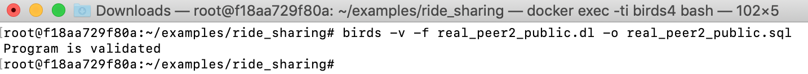
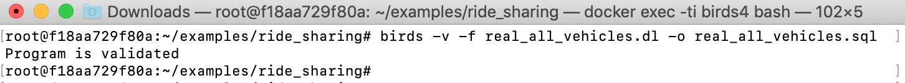

Examples on a ride-sharing schema
The ride-sharing schema (schema.sql) contains three tables:
area
| original_node | area_node |
|---|---|
| 0 | 0 |
| 50 | 0 |
| 100 | 1 |
| 200 | 2 |
| 300 | 3 |
| 400 | 4 |
| 500 | 5 |
| 600 | 6 |
| 700 | 7 |
| 800 | 8 |
peer1_vehicle
| vehicle_id | current_location | seat_count | request_id | pickup_location | dropoff_location |
|---|---|---|---|---|---|
| 1 | 200 | 4 | 3 | 200 | 300 |
| 2 | 50 | 4 | |||
| 3 | 100 | 4 | |||
| 4 | 300 | 4 | |||
| 5 | 500 | 4 | |||
| 6 | 600 | 4 | |||
| 7 | 400 | 4 |
peer2_vehicle
| vehicle_id | current_location | seat_count | request_id | pickup_location | dropoff_location |
|---|---|---|---|---|---|
| 1 | 600 | 4 | 5 | 600 | 700 |
| 3 | 300 | 4 | |||
| 10 | 400 | 4 | |||
| 2 | 800 | 4 | |||
| 11 | 100 | 4 | |||
| 12 | 50 | 4 | |||
| 13 | 700 | 4 | |||
| 23 | 200 | 4 |
View peer1_public
The following is an update strategy on the view peer1_public by using Datalog (real_peer1_public.dl):
source peer1_vehicle(VEHICLE_ID:int , CURRENT_LOCATION:int , SEAT_COUNT:int , REQUEST_ID:int , PICKUP_LOCATION:int , DROPOFF_LOCATION:int).
source area(ORIGINAL_NODE:int , AREA_NODE:int).
view peer1_public(VEHICLE_ID:int , CURRENT_AREA:int , SEAT_COUNT:int , REQUEST_ID:int , PICKUP_LOCATION:int , DROPOFF_LOCATION:int).
%constraints
% primary key VEHICLE_ID on peer1_vehicle
_|_ :- peer1_vehicle (V, L1, S1, R1, P1, D1), peer1_vehicle (V, L2, S2, R2, P2, D2), NOT L1 = L2.
_|_ :- peer1_vehicle (V, L1, S1, R1, P1, D1), peer1_vehicle (V, L2, S2, R2, P2, D2), NOT S1 = S2.
_|_ :- peer1_vehicle (V, L1, S1, R1, P1, D1), peer1_vehicle (V, L2, S2, R2, P2, D2), NOT R1 = R2.
_|_ :- peer1_vehicle (V, L1, S1, R1, P1, D1), peer1_vehicle (V, L2, S2, R2, P2, D2), NOT P1 = P2.
_|_ :- peer1_vehicle (V, L1, S1, R1, P1, D1), peer1_vehicle (V, L2, S2, R2, P2, D2), NOT D1 = D2.
% primary key ORIGINAL_NODE
_|_ :- area (ORIGINAL_NODE, AREA_NODE1), area (ORIGINAL_NODE, AREA_NODE2), NOT AREA_NODE1 = AREA_NODE2.
% primary key VEHICLE_ID on peer1_public
_|_ :- peer1_public (V, L1, S1, R1, P1, D1), peer1_public (V, L2, S2, R2, P2, D2), NOT L1 = L2.
_|_ :- peer1_public (V, L1, S1, R1, P1, D1), peer1_public (V, L2, S2, R2, P2, D2), NOT S1 = S2.
_|_ :- peer1_public (V, L1, S1, R1, P1, D1), peer1_public (V, L2, S2, R2, P2, D2), NOT R1 = R2.
_|_ :- peer1_public (V, L1, S1, R1, P1, D1), peer1_public (V, L2, S2, R2, P2, D2), NOT P1 = P2.
_|_ :- peer1_public (V, L1, S1, R1, P1, D1), peer1_public (V, L2, S2, R2, P2, D2), NOT D1 = D2.
% prevent update on the column CURRENT_AREA
_|_ :-peer1_vehicle (V, L, S, R, P, D), area (L,A1), peer1_public (V, A2, _, _, _, _), NOT A1 = A2.
% prevent insertion or deletion of a new vehicle id
all_id(V) :- peer1_vehicle (V, L, _, _, _, _), area (L,_).
_|_ :- all_id(V), NOT peer1_public (V, _, _, _, _, _).
_|_ :-peer1_public (V, _, _, _, _, _), NOT all_id(V).
% update strategy
-peer1_vehicle (V, L, S, R, P, D) :- peer1_vehicle (V, L, S, R, P, D), area (L,A), not peer1_public(V, A, S, R, P, D).
+peer1_vehicle (V, L, S, R, P, D) :- peer1_public (V, A, S, R, P, D), peer1_vehicle (V,L,_, _, _, _), area (L,A), not peer1_vehicle(V, L, S, R, P, D).
Verifying and compiling the update strategy to SQL statements saved in the file (real_peer1_public.sql):
birds -v -f real_peer1_public.dl -o real_peer1_public.sql

View peer2_public
The following is an update strategy on the view peer2_public by using Datalog (real_peer2_public.dl):
source peer2_vehicle(VEHICLE_ID:int , CURRENT_LOCATION:int , SEAT_COUNT:int , REQUEST_ID:int , PICKUP_LOCATION:int , DROPOFF_LOCATION:int).
source area(ORIGINAL_NODE:int , AREA_NODE:int).
view peer2_public(VEHICLE_ID:int , CURRENT_AREA:int , SEAT_COUNT:int , REQUEST_ID:int , PICKUP_LOCATION:int , DROPOFF_LOCATION:int).
%constraints
% primary key VEHICLE_ID on peer2_vehicle
_|_ :- peer2_vehicle (V, L1, S1, R1, P1, D1), peer2_vehicle (V, L2, S2, R2, P2, D2), NOT L1 = L2.
_|_ :- peer2_vehicle (V, L1, S1, R1, P1, D1), peer2_vehicle (V, L2, S2, R2, P2, D2), NOT S1 = S2.
_|_ :- peer2_vehicle (V, L1, S1, R1, P1, D1), peer2_vehicle (V, L2, S2, R2, P2, D2), NOT R1 = R2.
_|_ :- peer2_vehicle (V, L1, S1, R1, P1, D1), peer2_vehicle (V, L2, S2, R2, P2, D2), NOT P1 = P2.
_|_ :- peer2_vehicle (V, L1, S1, R1, P1, D1), peer2_vehicle (V, L2, S2, R2, P2, D2), NOT D1 = D2.
% primary key ORIGINAL_NODE
_|_ :- area (ORIGINAL_NODE, AREA_NODE1), area (ORIGINAL_NODE, AREA_NODE2), NOT AREA_NODE1 = AREA_NODE2.
% primary key VEHICLE_ID on peer2_public
_|_ :- peer2_public (V, L1, S1, R1, P1, D1), peer2_public (V, L2, S2, R2, P2, D2), NOT L1 = L2.
_|_ :- peer2_public (V, L1, S1, R1, P1, D1), peer2_public (V, L2, S2, R2, P2, D2), NOT S1 = S2.
_|_ :- peer2_public (V, L1, S1, R1, P1, D1), peer2_public (V, L2, S2, R2, P2, D2), NOT R1 = R2.
_|_ :- peer2_public (V, L1, S1, R1, P1, D1), peer2_public (V, L2, S2, R2, P2, D2), NOT P1 = P2.
_|_ :- peer2_public (V, L1, S1, R1, P1, D1), peer2_public (V, L2, S2, R2, P2, D2), NOT D1 = D2.
% prevent updates on the column CURRENT_AREA
_|_ :-peer2_vehicle (V, L, S, R, P, D), area (L,A1), peer2_public (V, A2, _, _, _, _), NOT A1 = A2.
% prevent insertion or deletion of a new vehicle id
all_id(V) :- peer2_vehicle (V, L, _, _, _, _), area (L,_).
_|_ :- all_id(V), NOT peer2_public (V, _, _, _, _, _).
_|_ :-peer2_public (V, _, _, _, _, _), NOT all_id(V).
% update strategy
-peer2_vehicle (V, L, S, R, P, D) :- peer2_vehicle (V, L, S, R, P, D), area (L,A), not peer2_public(V, A, S, R, P, D).
+peer2_vehicle (V, L, S, R, P, D) :- peer2_public (V, A, S, R, P, D), peer2_vehicle (V,L,_, _, _, _), area (L,A), not peer2_vehicle(V, L, S, R, P, D).
Verifying and compiling the update strategy to SQL statements saved in the file (real_peer2_public.sql):
birds -v -f real_peer2_public.dl -o real_peer2_public.sql

View all_vehicles
Since peer1_public and peer2_public are both updatable, we can use them as the base relations for other views.
The following is an update strategy for the view all_vehicles over peer1_public and peer2_public by using Datalog (real_all_vehicles.dl):
source peer1_public(VEHICLE_ID:int , CURRENT_AREA:int , SEAT_COUNT:int , REQUEST_ID:int , PICKUP_LOCATION:int , DROPOFF_LOCATION:int).
source peer2_public(VEHICLE_ID:int , CURRENT_AREA:int , SEAT_COUNT:int , REQUEST_ID:int , PICKUP_LOCATION:int , DROPOFF_LOCATION:int).
view all_vehicles(COMPANY_ID:int, VEHICLE_ID:int , CURRENT_AREA:int , SEAT_COUNT:int , REQUEST_ID:int , PICKUP_LOCATION:int , DROPOFF_LOCATION:int).
% constraint
% ensure that the company_id in all_vehicles is 1 or 2
_|_ :- all_vehicles(C, V, A, S, R, P, D), NOT C=1, NOT C=2.
+peer1_public(V, A, S, R, P, D) :- all_vehicles(C, V, A, S, R, P, D),C = 1, NOT peer1_public(V, A, S, R, P, D).
-peer1_public(V, A, S, R, P, D) :- peer1_public(V, A, S, R, P, D), C = 1, NOT all_vehicles(C, V, A, S, R, P, D).
+peer2_public(V, A, S, R, P, D) :- all_vehicles(C, V, A, S, R, P, D), C = 2, NOT peer2_public(V, A, S, R, P, D).
-peer2_public(V, A, S, R, P, D) :- peer2_public(V, A, S, R, P, D), C = 2, NOT all_vehicles(C, V, A, S, R, P, D).
Verifying and compiling the update strategy to SQL statements saved in the file (real_all_vehicles.sql):
birds -v -f real_all_vehicles.dl -o real_all_vehicles.sql
